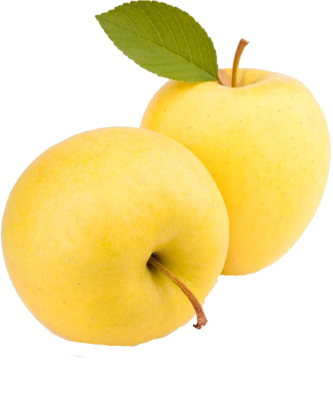

Голден Делішес

Голден Делішес (англ. Golden Delicious — «золотий чудовий») — сорт американського походження, відібраний у 1890 році у Східній Вірджинії А. Х. Моллінгсом із сіянців невідомого походження. Можливо походять від Ґраймз голден.
Дерево сильноросле, з широкоовальною або округлою середньозагущеною кроною. Середньорозвинуті скелетні гілки відходять від стовбура майже під прямим кутому Пробуджуваність бруньок середня, пагоноутворювальна здатність середня. Плодоносить на кільчатках, списиках, плодових прутиках, однорічних приростах. Зимостійкість нижча за середню, стійкість до парші та борошнистої роси середня. Сорт вибагливий до тепла, сонячної, радіації, рівня агротехніки.
Плоди середнього та більше за середній розміру (120–190 г), середньої одномірності, видовжено-округло-конічні, зеленувато-жовті, з великими опробковілими світло-коричневими сочевичками, іноді з незначним оранжевим рум'янком та іржавою сіткою. Шкірочка середньої товщини, щільна, еластична, гладенька, суха. М'якуш жовтувато-кремовий, щільний, дрібнозернистий, соковитий, ароматний відмінного кислувато-солодкого смаку (4,5—4,6 бала). Знімна стиглість настає наприкінці вересня, споживча — у січні. У сховищі плоди зберігаються до березня, у холодильнику — до травня. Транспортабельність висока. Використовують переважно у свіжому вигляді та на виготовлення сухих порошків.